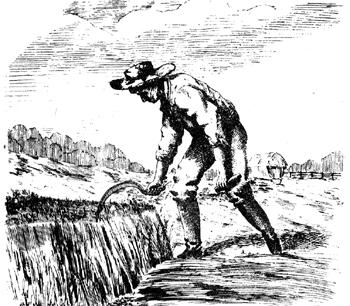
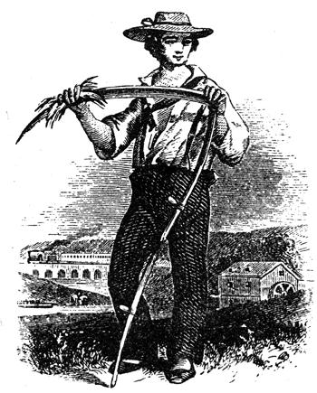

Ah, the vicissitudes of time. Two years ago, when there were NO currently relevant small scale farming introductory handbooks available, many of us welcomed the publication of Richard Langer's Grow !t! with open arms. Now that we're all older and more experienced, however, some folks find it increasingly easy to criticize that breakthrough beginner's guide (see the Feedback sections of MOTHER NOS. 23, 24 and 25). Which brings us to another breakthrough book that is just as important (probably more so) now as Grow it! was two years ago and which may well come up for its share of criticism in another 24 months or so. Be that as it may, John and Sally Seymour's record of 18 successful years on a shirttail sized homestead in England is important now and should offer welcome encouragement to today's back to the landers both real and imaginary. I started serializing the book in my No. 25 issue and I'm sure that many readers will want a personal copy for their home libraries.MOTHER.
Earth's increase, foison plenty,
Barns and garners never empty.
WILLIAM SHAKESPEARE: The Tempest
The crop that covers most of the human inhabited world is grass. This means, in the British Isles, grass and clover: in many other parts of the world grass and various edible bushes. Humans cannot eat grass, and so they must get it at second hand, through animals, in the form of meat, milk or eggs.
Grassland, in the British Isles at least, can be classified as either permanent pasture or ley (temporary pasture). It can be divided corner ways to this too: into grazing land and hay land.
Some of the best grassland in the world is permanent pasture, and it is a crime to plough it up. Some of the finest fattening pastures in England, such as the Romney Marsh and some of the Leicestershire fattening pastures, were ploughed up during the Second World War, owing to stupid decisions made by ignorant people, and have never yet recovered. Much permanent pasture, though, is pretty rough, and not very productive. It can be rendered more so by ploughing up and re seeding, or by treatment that does not involve ploughing up. Very heavy and drastic harrowing does a lot of good; you can drag it about until it looks as if most of the grass has been destroyed and the grass will be the better for it. Dressing with lime if it needs lime will often work wonders, as will slag or other phosphorous dressing. Both lime and phosphate encourage the clover at the expense of the grasses, and this is generally all to the good. Good draining is, of course, a sine quo non. Grass (when I use the word grass I mean grass and clover) will give you far more yield if you graze it really hard all at one time, and then rest it completely, rather than if you keep nibbling at it all the time. This is because the individual plants put down much better root growth if they are not kept nibbled off all the time. It is always a good thing to top grass, when it needs it, either with a mower of some sort or a scythe. This cuts the flowering heads off that the animals have left and forces the grass to make leaf instead of going to seed, and also kills the thistles. The application of nitrogen encourages the grasses and suppresses the clovers. This is because the clovers make their own nitrogen out of the atmosphere, by means of the symbiotic bacteria which live in their root nodules. This gives them an unfair advantage over the grasses. If you apply soluble nitrogen you take away this unfair advantage, and the grasses will grow at the expense of the clover. If you want very high yields from grass you must put on nitrogen and sacrifice the clovers. Personally I would prefer to give adequate phosphates and lime, and potash if it needs it, and this encourage the clovers and then I don't have to pay for nitrogen: the clover makes it. It has been proved conclusive, that the grass produced by heavy applications of nitrogen not so nutritious as that grown otherwise, but of course if they are, say, selling hay what does that matter? If you are using the hay yourself, though, it is a very different story. All nitrogen in the bag is expensive. And if ever there is a poorly shortage (nitrogen is fixed commercially from the air by the expenditure of electrical power) it will become more so. Heap: applications of farmyard manure do nothing but good. Tits manure rots down and disappears very quickly: actually earthworms drag it down into the soil. But if it is cow manure don't graze the land with cows for a while no animal likes grazing near its own droppings. Where cows have been grazing in a field for long you will find long green tufts of grass growing around, or after, their droppings. The cows will not touch these. Put horses in though, or sheep, and the tufts will very soon go. This is another excellent reason for mixed stocking and not mono stocking.
It is as well if you can retain some permanent pasture to make your holding, if you are going to keep any animals. remember in the Karroo, in the Cape Province, my employer on a big sheep farm had ploughed up some veld (which was gill sparsely growing Karroo bushes) and planted lucerne, which he irrigated, In these paddocks he put his pedigree rams. They began to sicken and some of them died. The vet told him to re-fence the paddocks, taking in some of the Karroo pasture. He did this and immediately the rams got better. Ley pasture can be extremely productive, but permanent pasture will have more of those minerals and vitamins that animals require. So keep some permanent pasture if you can possibly afford me land.
If you want to break up permanent pasture to make arable land, or to plough and re-seed, then take my advice and do it with pigs. Shove in your unringed pigs, fold them over the land in small patches and move them on when they've thoroughly rooted up the small patches; pull the land about behind them with a spring tine harrow or a spring cultivator; broadcast your seed. Another way (which we have tried) is to plough the old pasture up rough and as you do it plough Jerusalem artichokes in. Do this in the winter or very early spring. The arti-choke will grow and smother every living thing under them with their dense, jungle like cover. They will, if there are any about, attract pheasants by the score. Never mind the pheasants put the pigs in, in late summer, fold them over the field all autumn and winter, and the pigs will thrive and leave the land as clean as a whistle. In the spring you can do what you want with it.
Probably the most profitable use of a small piece of land would be to farm it on a rotation that included one year in four of a one year ley. The famous Norfolk Four Course Rotation (wheat roots barley one year ley) is an example of this. With the great variety of crops that the self supporter will tend to grow his rotations must be far more complicated. You might grow something like: wheat, roots or kale to be fed to stock, potatoes or any of a great variety of row crops that have to be hoed and thus lend themselves to the suppression of weeds, 'cleaning crops' they are called then spring corn of some sort, barley, spring wheat or oats and undersow this with your ley a grass and clover mixture. If you have decided on a one year ley this mixture will be chiefly Italian rye grass and red clover. A typical seeds mixture for a one year ley might be: 20 Ibs. Italian rye, 8 Ibs. red clover, 1 Ib. alsike Italian rye grass gives an 'early bite', that is it comes up early in the year when everything is dying for grass soon after the 'hungry gap'. In fact it shortens the latter and therefore it is very valuable. You broadcast this seeds mixture after you have either broadcast or drilled your spring corn (barley, oats or spring wheat or rye you couldn't undersow maize of course). You then harrow the land and the seeds mixture will come up as an undercrop, with the corn as a nurse crop. When you cut the corn you will have a good stand of grass and clover. Graze it lightly the' first autumn (the treading of the stock will help consolidate the plants), rest it throughout the winter, and rejoice in an 'early bite' in March or April. After having had a full summer's use out of it for grazing or hay plough it up in the autumn and sow your winter wheat in it. The winter corn will benefit by the high fertility that is put into the soil by the ploughing in of all that grass and clover, plus the droppings of the animals that have grazed on it. The 'root break', that comes after the winter corn, is the one that gets the heavy dressings of farmyard manure. If you can put up to twenty tons to the acre on the land before you sow the roots, or plant the spuds, so much the better. If you go on treating your land in this way, and really hoe your roots or cleaning crop, And really do it all well, your land will increase steadily in fertility, workability and freedom from perennial weeds. When you die you will leave something valuable behind you: land in good heart. There's an immortality that is worth having.
You can, though, improve on the Norfolk Four Course Rotation by the addition of a pig break. There are several possibilities here. You should anyway run pigs over your potato and root ground after you have lifted the crop to clean it up and get what you have left. Or you could fold pigs on the one year ley in the autumn and winter instead of ploughing it up. The pigs will plough it up for you. But that means that you can't get winter wheat in it that year you'll have to follow the pigs with a spring sown crop, either roots or spring corn. There are endless variations that you can play. Remember though that roots (turnips, marigolds, fodder beets, sugar beets, potatoes, and cabbages, kale or rape by favour) are your cleaning crop. You must hoe them and hoe them and kill the weeds. The ley, whether one, two or three years old, is your putting back of fertility crop. You are, with it, ploughing in a lot of vegetable matter which all rots down to humus. The winter corn, probably wheat, is a 'cash crop' in that it draws a lot out of the land. So does the spring corn, but that acts as a nurse for your ley. The roots, too, are a feeding crop in that you ought to manure them heavily, to the benefit not only of them but of the crops that come after.
If you want to have a two or three year ley, or longer, then you will need a much more complicated seeds mixture, and this is a fairly typical one:
12 lbs. perennial rye grass 8 Ibs. Italian rye grass 6 Ibs. cocksfoot grass 2 Ibs. red clover 2 Ills. late red clover I Ib. alsike 1 Ib. Dutch white clover
But your agricultural adviser from the Ministry of Agriculture will advise you on a suitable mixture for your district. If you want to put down permanent pasture you could have something like this:
14 Ibs. perennial rye grass 8 lbs. cocksfoot 4 lbs. timothy 1 Ib. rough stalked meadow grass 4 Ibs. late flowering red clover 1 Ib. wild white clover ------------ 32 Ibs. per acre
In the above the red clover is to give a good bulk of clover the first year. If you can bear to sacrifice this bulk in the first year I would leave it out. This will give the wild white a better chance, and it is the wild white that is going to give you your permanent clover component. On very good rich land I would omit the cocksfoot. It will grow too coarse and rampant, and is rather an unpalatable grass anyway. Cut the timothy out on dry soils, it only really comes into its own on wet land. On light land cut the rough stalked meadow grass out: that again is a wet land crop, or on good strong loams or clays. Again don't hesitate to get expert advice about your particular locality. There's nothing to beat the advice of your farming neighbors. Deep rooting herbs are often included in permanent grass mixtures. M. McG. Cooper suggests:
1 1/2 2Ibs. chicory
1 1/2 21bs. burnet
1 lb. ribgrass or plantain
1 lb., sheeps parsley
Personally I should leave out the plantain. M. McG. Cooper's book Grassland Farming is, incidentally, a very good one. To establish your pasture, broadcast the seed on a very good firm seedbed either in the spring alone, in the spring under a nurse crop (barley or oats or spring wheat) or in late summer. If own graze it lightly later in the first summer. If sown in the late summer graze it lightly in the late spring. Don't overgraze it the first summer. HAY
The earlier you cut the hay the more nutritious it will be, but the smaller the tonnage of it. We cut ours in July after the sheep shearing. Good weather is absolutely all important. If it. stays fine you may get all your hay under cover in a few days and it will be perfect. Cutting can be done by scythe, horse mower or powered mower. A man is supposed to be able to cut an acre a day with a scythe. I have cut hay with a scythe, in South West Africa of all places, and very hard work it is too. You must keep the blade as sharp as a razor, and use a finer wet stone (or 'rubber') than that which you would use for corn. A horse drawn mower needs two good horses. Pulling a mower is very hard work for horses. The French have experimented with a horse drawn mower the blade of which is driven not by the ground wheels, but by a fractional horsepower petrol motor like a chain saw motor. This is said to be wonderfully effective, and its consumption of fuel is almost negligible. I have not seen it, but believe such machines can be seen working at Anthony, near Paris. Power mowers can be reciprocating or rotary. This year our hay was late, badly laid and matted and we hired a neighbor with a rotary mower. It made a very good job.
The old fashioned method (in which 1 was brought up) was to turn the swathes by hand either with a pitch fork or a wooden rake, according to taste. As you turn them over fluff them up. Nowadays you can get an astonishing variety of machines to do this for you. There were some good machines that were pulled by horses for doing this work. When the hay is dry rake it up into big windrows, either with the big wooden drag rake or with a hoarser. You can still occasionally pick a horse rake up fairly cheaply and they are good tools. Then, when you are sure it is dry enough, the old idea was to cock it. Pile it up into little mini stacks higher than a man and dome shaped. Let it dry in the cock until the green has really gone out of it. If it is still too moist, and heating inside the cock, well then you must break the cocks and spread it about a bit. If it comes on to rain you must rush out and cock is quickly. In the cock it won't take much harm. When it is quit: dry you can cart it, and stack it. Either stack it in a barn o! else thatch the stack with straw or rushes.
Even then your troubles are not over. If it is stacked out of doors you must cut it with a stack knife before you can fee it. And that's a job to make the sweat run down your face.
The modern way is to bale it. There are plenty of contractors who will do this work, but everybody wants them at once. The modern way is to throw the hay about hard as soon as it is cutscatter it well. There is a great variety of machines to do this, all tractor drawn. As soon as it is anything like dry (you keep turning it about with machines as often as you can) you get it into windrows again and bale it. If the baler is busy somewhere else that day and can't come and it pours with rain that night well you may lose half the value o your hay and you may lose it altogether. If you can bale it though, it is pretty safe. But as soon as you can get the bale under cover, you can then heave a mighty sigh of relief and turn to a well earned gallon or two of home brewed beer.
If you start the winter with at least a ton of hay per head of large stock (cows and horses) and a few tons for any sheep you may have, you can feel fairly secure. A very good yield is two tons per acre: you may get less. You can bump up the yield of grass enormously by applications of nitrogenous fertilizer, it you have no ideological objections to this. Personally I have pecuniary ones, but I do it on a modest scale sometimes nevertheless.
|
 |
 |
|